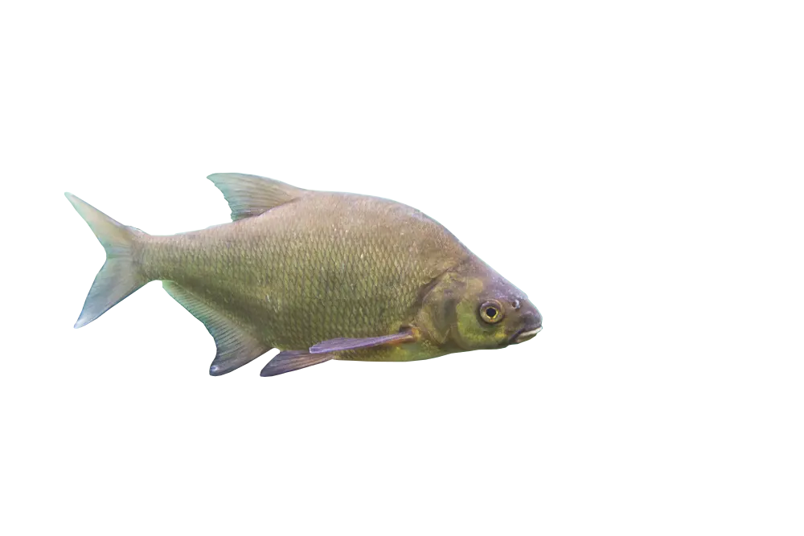

LESZCZ

O Gatunku:
Leszcz to ryba słodkowodna z rodziny karpiowatych (Cyprinidae), popularna w wędkarstwie i powszechna w polskich wodach. Jest znany ze swojego charakterystycznego kształtu ciała i stadnego trybu życia. Przeciętna długość 30–50 cm, masa do 1–3 kg. Rekordowe osobniki osiągają 75 cm i ponad 6 kg wagi. Żyje do 15–20 lat.
Występowanie:
W Polsce spotykany w jeziorach, stawach, kanałąch, zbiornikach zaporowych i rzekach nizinnych.
Pożywienie:
Żywi się głównie organizmami dennymi: larwami owadów, małżami, ślimakami, skorupiakami i roślinnością wodną.
Metoda połowu:
Metoda gruntowa(feeder, method feeder), metoda spławikowa.
Powrót do katalogu